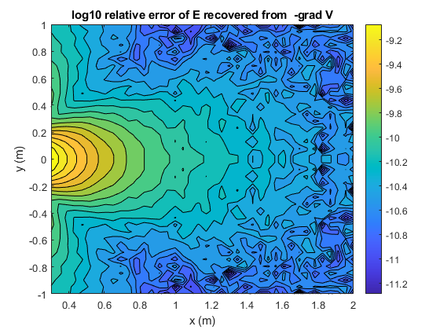
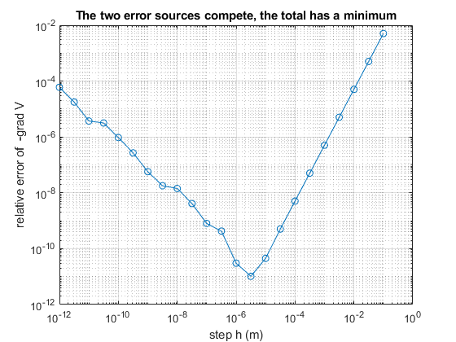

EECE 306 Lab 6 notebook. Electric Potential, the Gradient, and Path Independence
Team 3: Amelia Harris, Carissa McWilliams, Mitch Nazareth. TODO replace with your team number and member names.
Fill in every TODO, run publish('Lab06_notebook.m') from the toolbox root, print the HTML to PDF, three to five pages.
Contents
Setup
clear; close all;
e0 = em.const.eps0();
Q = 2e-9;
s = em.src.pointCharge(Q, [0 0 0]);
FE = @(r) em.field.E(s, r);
FV = @(r) em.field.V(s, r);
Potential against the closed form
radii = (1:10)'; Vnum = em.field.V(s, [radii zeros(10,2)]); Vref = Q ./ (4.*pi.*e0.*radii); disp(' r (m) relative error') disp([radii abs(Vnum - Vref)./Vref]) em.test.assertClose(Vnum, Vref, 1e6, 'Potential against the closed form')
r (m) relative error
1.0000 0
2.0000 0
3.0000 0
4.0000 0
5.0000 0.0000
6.0000 0
7.0000 0
8.0000 0
9.0000 0
10.0000 0.0000
E from the gradient, and the error map
E computed directly and E recovered as minus the gradient of V must agree away from the source.
[X, Y] = meshgrid(linspace(0.3, 2, 40), linspace(-1, 1, 40)); P = [X(:) Y(:) zeros(numel(X),1)]; Ed = em.field.E(s, P); Eg = -em.op.grad(FV, P); em.test.assertClose(Ed, Eg, 1e-6, ['Electric field from gradient and' ... 'direct calculation']) errmap = reshape(em.vec.mag(Ed - Eg) ./ em.vec.mag(Ed), size(X)); figure; contourf(X, Y, log10(errmap), 20); colorbar xlabel('x (m)'); ylabel('y (m)') title('log10 relative error of E recovered from -grad V') % TODO one or two sentences on where the error is largest and why. % Error is largest near the edge of the region where the gradient % is calculated because the gradient is approximated using finite % difference. This creates relative error that gets bigger when % the electric field is smaller.

Choosing the step size, the V shaped curve
Truncation error falls as h squared, round off grows as 1 over h. The total has a minimum. Sweep h and find it for this machine.
p0 = [1 0.5 0]; Eexact = em.field.E(s, p0); hs = logspace(-12, -1, 23)'; errh = zeros(size(hs)); for k = 1:numel(hs) Eh = -em.op.grad(FV, p0, hs(k)); errh(k) = em.vec.mag(Eh - Eexact) / em.vec.mag(Eexact); end figure; loglog(hs, errh, 'o-'); grid on xlabel('step h (m)'); ylabel('relative error of -grad V') title('The two error sources compete, the total has a minimum') [emin, imin] = min(errh); fprintf('best h on this machine about %.1e with error %.1e\n', hs(imin), emin); fprintf('the API default h = 1e-5 sits on the flat bottom of this curve\n');
best h on this machine about 3.2e-06 with error 1.0e-11 the API default h = 1e-5 sits on the flat bottom of this curve

The field is conservative, with a control
loops = { @(t)[2.*cos(t) 2.*sin(t) zeros(size(t))], ...
@(t)[1+0.5.*cos(t) 0.5*sin(3*t) 0.3.*sin(t)], ...
@(t)[0.5.*cos(t) 1+0.8.*sin(t) 0.2.*cos(2.*t)] };
for k = 1:3
C = em.field.circulation(FE, loops{k}, [0 2*pi], 400);
fprintf('circulation of E on path %d = %.3e\n', k, C);
end
Fnc = @(r) [-r(:,2) r(:,1) zeros(size(r,1),1)];
Cnc = em.field.circulation(Fnc, loops{1}, [0 2*pi], 400);
fprintf('circulation of the control field = %.4f (expect 8 pi, clearly nonzero)\n', Cnc);
em.test.assertClose(Cnc, 8*pi, 1e-6, 'Circulation test')
% The control matters. A test that only ever confirms zero cannot tell
% correct code from code that always returns zero.
circulation of E on path 1 = 8.299e-16 circulation of E on path 2 = 4.611e-10 circulation of E on path 3 = -4.675e-11 circulation of the control field = 25.1327 (expect 8 pi, clearly nonzero)
Potential difference two ways
pa = [1 0 0]; pb = [0.3 0.4 0]; dV = em.field.V(s, pb) - em.field.V(s, pa); seg = @(t) pa + t.*(pb - pa); work = -em.field.circulation(FE, seg, [0 1], 400); fprintf('V(b) - V(a) from em.field.V = %.6e V\n', dV); fprintf('minus line integral of E, a to b = %.6e V\n', work);
V(b) - V(a) from em.field.V = 1.797510e+01 V minus line integral of E, a to b = 1.797513e+01 V
Seeing the potential
figure; em.viz.contourV(@(r) em.field.V(s, r), [-2 2], [-2 2], 60, struct('title', 'Equipotentials of a point charge')); hold on em.viz.streamlines(FE, [-2 2], [-2 2], [cosd(0:45:315)' sind(0:45:315)' zeros(8,1)].*0.2, struct()); title('Equipotentials with field lines overlaid')
size(Vval) = [3600 1] min(Vval) = 6.35516 max(Vval) = 374.954 NaNs = 0 Infs = 0

Interpretation
TODO three to six sentences. State what the step size study implies for every later use of em.op.grad, and why driving h smaller is not safer.
% The step size study implies that there is a size of h small enough to % ensure the best precision without worsening the error caused by % round-off. This error is caused by a loss in numerical precision % when calculating the difference between two very close % potential values. Driving h to be smaller is not always % safer because eventually the two numerical values become % close enough that the difference between them loses precision.
Problems encountered
TODO honest account, or NONE.
% The midpoint quadrature and numerical derivative caused the relative % error to be larger than the expected relative error. Switching to Gauss's % equations resolved the issue. There were also issues with laying the % field lines over the quiver2 plot, and it was diffult to determine how % em.field.V would test if a source has an extent that grows with N. The % original notebook did not use element-wise multiplication in the function % handles.
Full test suite
runTests
EECE 306 toolbox test suite
--------------------------------------------------------------
24.2.0.3212159 (R2024b) Update 9
eps0 = 8.8541878128e-12 F/m
mu0 = 1.2566370614e-06 H/m
c0 = 2.9979245808e+08 m/s
eta0 = 376.730314 ohm
Derived constant checks passed.
mag([3 4 0]) = 5 (expect 5 exactly)
unit([3 4 0]) =
0.6000 0.8000 0
unit([0 0 0]) (expect all NaN) =
NaN NaN NaN
angle perpendicular = 1.5707963267949 (expect pi/2)
angle antiparallel = 3.14159265358979, real = 1 (expect pi, 1)
fromTo([1 1 1],[2 3 4]) =
1 2 3
mag input 100x3 output [100 1]
unit input 100x3 output [100 3]
angle input 100x3 output [100 1]
fromTo input 100x3 output [100 3]
PASS test_lab01 0.51 s
spherical roundtrip max error = 6.357e-15
cylindrical roundtrip max error = 2.979e-15
c2sph([0 0 1]) =
1 0 0
c2sph([0 0 -1]) =
1.0000 3.1416 0
phi in the four quadrants = 0.7854 2.3562 3.9270 5.4978 rad
all inside [0, 2*pi) = 1
vector roundtrip (spherical pair) max error = 1.088e-15
magnitude change under conversion max = 8.882e-16
vector roundtrip (cylindrical pair) max error = 6.280e-16
at (0, 5, 0), (Ar, Atheta, Aphi) =
3.0000 0.0000 -2.0000
at (4, 0, 0), (Ar, Atheta, Aphi) =
2.0000 0.0000 3.0000
PASS test_lab02 0.28 s
r (m) relative error
1.0000 0
2.0000 0
3.0000 0
4.0000 0
5.0000 0
6.0000 0
7.0000 0
8.0000 0
9.0000 0.0000
10.0000 0
Minimum charge of positive charges = 7.463e-01 (should be greater than 0)
Maximum charge of negative charges = -7.463e-01 (should be less than 0)
max |Ex| on bisector = 0.000e+00 V/m
max |E| on the same plane = 5.061e+02 V/m
element count after first merge = 2 (expect 2)
Mismatch test passed: em.src.merge(q1, crnt_struct) successfully raised an error.
|E(r)| / |E(2r)| = 8.0003 (expect near 8 for a dipole)
Singularity test passed: em.field.E(q, [0 0 0]) successfully raised an error.
em.field.E on 5000 points took 0.008 s (requirement, under 2 s)
Observation points: N = 10, Source Charges: M = 1, Product = 10, Time = 0.000 s
Observation points: N = 100, Source Charges: M = 1, Product = 100, Time = 0.000 s
Observation points: N = 1000, Source Charges: M = 1, Product = 1000, Time = 0.000 s
Observation points: N = 10000, Source Charges: M = 1, Product = 10000, Time = 0.002 s
Observation points: N = 100000, Source Charges: M = 1, Product = 100000, Time = 0.018 s
Observation points: N = 1000000, Source Charges: M = 1, Product = 1000000, Time = 0.132 s
Observation points: N = 10000000, Source Charges: M = 1, Product = 10000000, Time = 1.188 s
Compution time surpasses time threshold at N=100000000 points: took 18.753 seconds
PASS test_lab03 25.84 s
circle length 6.283185 expect 6.283185
sphere area 12.567806 expect 12.566371
ball volume 4.187181 expect 4.188790
square area 1.000000 expect 1.000000
midpoint observed order p = 2.00
trapz observed order p = 2.09
simpson observed order p = 4.00
gauss N = 2 error = 3.855e-04
gauss N = 4 error = 9.330e-10
gauss N = 8 error = 6.661e-16
gauss N = 16 error = 2.887e-15
ratio first exceeds 0.99 at L/d about 19.3
ratio first exceeds 0.99 at a/h about 59.8
net charge of rho(z) = z on [-1, 1] = -0.000 C (expect 0)
PASS test_lab04 3.59 s
flux through sphere = 3.000000e-09 C
enclosed charge = 3.000000e-09 C
relative error = 4.175e-08
flux with charge outside = 0.000 C (consistent with zero)
sphere 3.000000e-09 C
cube 3.000204e-09 C
hemisphere and cap 3.000001e-09 C
charge at x = 0.00 flux = 3.000000e-09 C
charge at x = 0.15 flux = 3.000000e-09 C
charge at x = 0.30 flux = 3.000000e-09 C
Nu = 10 div D inside = 1.0163e-06 rho_v = 1.0000e-06 rel err = 1.63e-02
Nu = 20 div D inside = 1.6814e-06 rho_v = 1.0000e-06 rel err = 6.81e-01
Nu = 40 div D inside = 7.4061e-07 rho_v = 1.0000e-06 rel err = 2.59e-01
div D in charge free space = 0.000 (consistent with zero)
flux with swapped parameter order = -3.000000e-09 C (sign flipped)
PASS test_lab05 1.37 s
r (m) relative error
1.0000 0
2.0000 0
3.0000 0
4.0000 0
5.0000 0.0000
6.0000 0
7.0000 0
8.0000 0
9.0000 0
10.0000 0.0000
best h on this machine about 3.2e-06 with error 1.0e-11
the API default h = 1e-5 sits on the flat bottom of this curve
circulation of E on path 1 = 8.299e-16
circulation of E on path 2 = 4.611e-10
circulation of E on path 3 = -4.675e-11
circulation of the control field = 25.1327 (expect 8 pi, clearly nonzero)
V(b) - V(a) from em.field.V = 1.797510e+01 V
minus line integral of E, a to b = 1.797513e+01 V
size(Vval) = [3600 1]
min(Vval) = 6.35516
max(Vval) = 374.954
NaNs = 0
Infs = 0
PASS test_lab06 0.97 s
--------------------------------------------------------------
6 passed, 0 failed, 6 total
All tests passing.